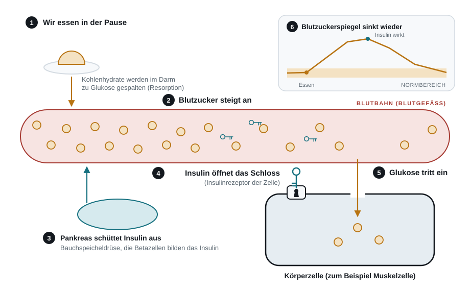
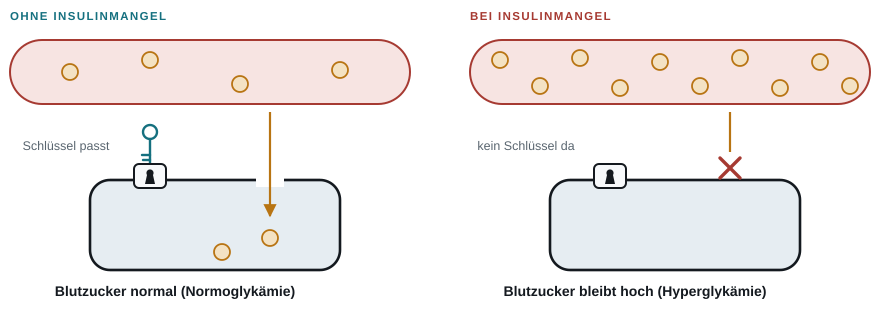

Als ich zum ersten Mal gesehen habe, dass jemand sich Insulin spritzt, habe ich nicht verstanden, warum. Und das mit dem lang- und kurzwirksamen Insulin habe ich erst recht nicht verstanden. Dann habe ich mich, noch vor der Ausbildung, aus Interesse hingesetzt und mich informiert. Und dann hat es klick gemacht.
Dieser Beitrag beantwortet drei Fragen. Erstens: Was macht Insulin im Körper, und was passiert, wenn es fehlt oder schlecht wirkt? Zweitens: Wie unterscheiden sich Typ 1 und Typ 2? Und drittens: Was zählt im Notfall, und was gehört zur Verantwortung, bevor man spritzt? Er ist die ausführliche Fassung zur Podcastfolge „Insulin einfach erklärt: Typ 1, Typ 2 und was im Notfall zählt“ von Pflege weitergedacht. Er richtet sich an Auszubildende, Pflegende und alle, die Diabetes verstehen wollen.
Ich bin Auszubildender zum Pflegefachmann, kein Arzt. Das hier ist Ausbildungswissen. Es ersetzt keine ärztliche Anordnung. Im Notfall gilt immer die 112.
Warum die Quellen nicht verlinkt sind: Dieser Beitrag stützt sich auf Unterrichtsmaterial aus meiner Pflegeausbildung. Dieses Material kann man online nicht nachlesen, und ich darf es nicht veröffentlichen, weil auf den Blättern Daten der Schule stehen. Ich nenne es deshalb im Quellenverzeichnis so genau wie möglich (Thema, Jahr, Seite), ohne Namen. Es ist eine Lehrquelle. Wo ich eine Aussage zusätzlich in einer deutschen S3-Leitlinie nachgelesen habe, steht die Leitlinie mit Seite dabei. Beide Leitlinien kannst du kostenlos als PDF lesen, die Links stehen im Quellenverzeichnis.
- Wo Insulin gebildet wird
- Was Insulin im Körper macht
- Typ 1: Der Schlüssel fehlt
- Typ 2: Das Schloss klemmt
- Typ 1 und Typ 2 im Vergleich
- Insulinarten: kurz, lang und gemischt
- Der Notfall: Unterzuckerung und Überzuckerung
- Bevor man spritzt: Einverständnis, Verantwortung und die 10-R-Regel
- Evidenz und Grenzen dieses Beitrags
- Was das für die Pflegepraxis heißt
- Das Wichtigste in Kürze
- Häufig gestellte Fragen
- Quellenverzeichnis
Wo Insulin gebildet wird
Diabetes mellitus ist eine Stoffwechselerkrankung mit dauerhaft erhöhtem Blutzucker. Der Fachbegriff für zu viel Zucker im Blut ist Hyperglykämie. Im Mittelpunkt steht ein Hormon, das Insulin. Ein Hormon ist ein Botenstoff, den der Körper selbst herstellt und der über das Blut zu seinem Ziel kommt.
Insulin entsteht in der Bauchspeicheldrüse, fachlich Pankreas. Sie liegt auf Höhe des ersten Lendenwirbels an der hinteren Bauchwand und gliedert sich in Kopf, Körper und Schwanz (UM, 2026a). Das Besondere: Sie besteht aus zwei Drüsen in einer. Ein Teil bildet Verdauungssaft und gibt ihn in den Verdauungstrakt ab, das nennt man exokrin. Der andere Teil bildet Hormone und gibt sie direkt ins Blut ab, das nennt man endokrin (UM, 2026a).
Diese Hormonzellen liegen als kleine Zellgruppen verstreut im Drüsengewebe. Man nennt sie Langerhans-Inseln, viele davon liegen im Pankreasschwanz, alle zusammen heißen Inselorgan. Zwei Zelltypen sind für uns wichtig: Die Beta-Zellen machen etwa 70 Prozent der Inselzellen aus und bilden Insulin. Die Alpha-Zellen sind etwa 20 Prozent und bilden Glukagon (UM, 2026a). Glukagon ist der Gegenspieler von Insulin. Es wird ausgeschüttet, wenn der Blutzucker niedrig ist, und wirkt vor allem in der Leber, wo der Zuckerspeicher Glykogen abgebaut wird. Der Blutzucker steigt dann wieder (UM, 2026a). Insulin senkt, Glukagon hebt.
Was Insulin im Körper macht
Stell dir vor, du isst in der Pause ein Brötchen. Die Kohlenhydrate daraus, also Stärke und Zucker, werden im Darm zu Glukose gespalten. Glukose ist der Traubenzucker. Sie geht ins Blut, dieser Weg heißt Resorption, und der Blutzucker steigt. Die Beta-Zellen merken das und schütten Insulin ins Blut aus (UM, 2026b, S. 1 und 2).
Jetzt kommt das Bild, das ich mir gemerkt habe, das Schlüssel-Schloss-Prinzip. Insulin ist der Schlüssel, die Glukose ist der Zucker, und die Körperzelle hat das Schloss. Das Schloss ist der Insulinrezeptor, eine Andockstelle an der Außenhaut der Zelle. Passt der Schlüssel, wird die Zelle durchlässig und die Glukose kann rein.
Fachlich passiert in den Muskel- und Fettzellen Folgendes: Insulin sorgt dafür, dass in die Zellhülle zusätzliche Transporter eingebaut werden. Das sind kleine Eingänge, die die Glukosemoleküle aus dem Blut in die Zelle bringen (UM, 2026a). In der Zelle wird der Zucker zu Energie verbrannt oder als Glykogen eingelagert, der Speicherform des Zuckers in Leber und Muskel. Weil der Zucker jetzt in den Zellen ist, sinkt der Wert im Blut wieder. Das nennt man Normoglykämie (UM, 2026b, S. 1 und 2).

Das Ganze ist ein Regelkreis: Essen, Blutzucker steigt, Insulin kommt, der Zucker geht in die Zellen, der Blutzucker sinkt. Merk dir den einen Satz: Insulin ist der Schritt, der die Zelle öffnet. Fehlt er, bleibt der Zucker im Blut liegen, obwohl die Zellen gleichzeitig hungern.

Typ 1: Der Schlüssel fehlt
Bei Typ 1 greift das eigene Abwehrsystem die Beta-Zellen an. Das nennt man Autoimmunreaktion, der Körper bekämpft fälschlich sein eigenes Gewebe. Die Beta-Zellen werden zerstört, und es wird praktisch kein eigenes Insulin mehr gebildet. Das ist ein absoluter Insulinmangel: Der Schlüssel fehlt komplett. Als Auslöser nennt meine Lernunterlage nicht eine einzelne Ursache, sondern ein Zusammenspiel aus Virusinfektionen, Umwelteinflüssen und Genetik (UM, 2026c).
Typ 1 betrifft meist Kinder, Jugendliche und junge Erwachsene. Die Nationale VersorgungsLeitlinie nennt als typisches Alter Kindes- bis Erwachsenenalter und als Pathogenese (Entstehung) autoimmun mit absolutem Insulinmangel (BÄK et al., 2023, S. 59). Etwa 5 bis 10 Prozent aller Menschen mit Diabetes haben Typ 1, bei Typ 2 sind es 90 bis 95 Prozent (Bundesärztekammer et al. [BÄK et al.], 2023, S. 59). Das deckt sich mit dem, was wir im Unterricht gelernt haben (UM, 2026c).
Typ 1 beginnt oft plötzlich. Typische Zeichen sind sehr viel Durst (Polydipsie) und häufiges Wasserlassen (Polyurie). Dazu kommen schneller, deutlicher Gewichtsverlust trotz normalem oder sogar gesteigertem Appetit, Müdigkeit und Leistungsabfall (UM, 2026c). Weil der Schlüssel fehlt, ist von Anfang an Insulin nötig, lebenslang. Meist spritzt man nach dem Basis-Bolus-Prinzip, dazu unten mehr (UM, 2026c).
Die Zuckerfabrik
Ich habe dazu eine Zuckerfabrik gezeichnet. Stell dir den Körper als Fabrik vor. Die Zellen sind die Arbeiter. Sie warten auf den Zucker, aber ohne Schlüssel kommt keiner rein. Als Notlösung holt sich die Fabrik ihre Energie aus den Fettzellen. Der Fachbegriff dafür ist Lipolyse, also Fettabbau. Der Haken: Dabei entsteht Müll. Das sind die Ketonkörper, saure Abbaustoffe des Fetts. Sie machen das Blut sauer, dieser Zustand heißt Azidose, also Übersäuerung. Zusammen ergibt das die Ketoazidose. Sie ist ein Notfall (UM, 2024b, S. 1).
Typ 2: Das Schloss klemmt
Bei Typ 2 ist der Schlüssel da, oft sogar viel davon. Aber das Schloss klemmt. Die Körperzellen sprechen schlechter auf Insulin an, der Fachbegriff ist Insulinresistenz. Im Verlauf lässt zusätzlich die Leistung der Beta-Zellen nach (UM, 2026c). Man spricht von einem relativen Insulinmangel: Insulin ist vorhanden, wirkt aber nicht mehr ausreichend.
Begünstigend sind laut meiner Unterlage Übergewicht, Bewegungsmangel, ungünstige Ernährung und die Veranlagung in der Familie. Typ 2 zeigt sich meist ab dem 40. Lebensjahr, zunehmend aber auch bei jüngeren Menschen (UM, 2026c). Der Beginn ist schleichend. Oft bemerkt man lange nichts, und die Erkrankung ist ein Zufallsbefund. Wenn Beschwerden da sind, sind sie schwächer als bei Typ 1: etwas Durst, häufiges Wasserlassen, Müdigkeit, mehr Infekte und Wunden, die schlecht heilen. Häufig kommen Übergewicht, Bluthochdruck und erhöhte Blutfette dazu, zusammen heißt das metabolisches Syndrom (UM, 2026c).
Die Therapie ist eine Treppe, eine Stufentherapie. Erst Ernährung umstellen, Gewicht senken, mehr Bewegung. Reicht das nicht, kommen Tabletten, die oralen Antidiabetika, allen voran Metformin. Und erst wenn auch das den Blutzucker nicht genug senkt, kommt zusätzlich oder stattdessen Insulin (UM, 2026c).
Typ 1 und Typ 2 im Vergleich
| Typ 1 | Typ 2 | |
|---|---|---|
| Bild | Der Schlüssel fehlt | Das Schloss klemmt |
| Insulinmangel | absolut, praktisch kein eigenes Insulin | relativ, Insulin ist da, wirkt aber schlecht |
| Ursache | Autoimmunreaktion zerstört die Beta-Zellen | Insulinresistenz, später nachlassende Beta-Zellen |
| Alter | meist Kinder, Jugendliche, junge Erwachsene | meist ab dem 40. Lebensjahr, zunehmend jünger |
| Beginn | plötzlich, deutliche Beschwerden | schleichend, oft Zufallsbefund |
| Häufigkeit unter allen Diabetesformen | 5 bis 10 Prozent | 90 bis 95 Prozent |
| Neigung zur Ketose (Bildung von Ketonkörpern) | ja | nein |
| Therapie | von Beginn an Insulin, lebenslang | zuerst Lebensstil, dann Tabletten, dann eventuell Insulin |
Insulinarten: kurz, lang und gemischt
Wenn man Insulin spritzt, will man nachmachen, was die Bauchspeicheldrüse sonst selbst tut. Sie gibt ständig kleine Mengen ab, das ist die basale Sekretion. Und nach einer Mahlzeit gibt sie größere Mengen ab, das ist die postprandiale Sekretion, also die Ausschüttung nach dem Essen (UM, 2024e, S. 3). Deshalb gibt es drei Gruppen:
- Kurzwirksame Insuline, die Bolusinsuline. Sie fangen die Blutzuckerspitze nach dem Essen ab.
- Langwirksame Insuline, die Basalinsuline. Sie decken den Grundbedarf.
- Mischinsuline, eine Kombination aus kurz- und langwirksamem Insulin, meist im Verhältnis 30 zu 70.
| Insulinart | Beginn | Maximum | Dauer | Besonderheit |
|---|---|---|---|---|
| Normalinsulin (kurzwirksam) | nach 20 bis 30 Minuten | nach 2 Stunden | 5 bis 7 Stunden | Spritz-Ess-Abstand 20 bis 30 Minuten |
| Kurzwirksame Analoga | nach 5 bis 15 Minuten | nach 1 Stunde | 2 bis 3 Stunden | kein Spritz-Ess-Abstand |
| NPH-Insulin (langwirksam) | nach 45 bis 90 Minuten | nach 4 bis 8 Stunden | 10 bis 12 Stunden | trüb, muss vor der Injektion durchmischt werden |
| Langwirksame Analoga | nach 2 bis 4 Stunden | nach 7 bis 12 Stunden | je nach Wirkstoff 12 bis 40 Stunden | klar, muss nicht durchmischt werden |
| Mischinsuline | mit Normalinsulin nach 20 bis 30 Minuten, mit kurzwirksamem Analogon nach 5 bis 15 Minuten | nach 4 bis 8 Stunden | 10 bis 12 Stunden | trüb, muss durchmischt werden |
Der Spritz-Ess-Abstand ist die Zeit zwischen Spritzen und Essen. Das Material nennt ihn für Normalinsulin, die kurzwirksamen Analoga brauchen keinen. Wie oft man ein trübes Insulin schwenkt, steht in meinen Unterlagen nicht überall gleich (eine Tabelle nennt 20-mal, ein anderes Blatt 10- bis 15-mal). Deshalb nenne ich hier keine Zahl. Es gilt die Herstellerangabe. Die Zahlen in Tabelle 2 stammen aus einer Tabelle des Unterrichts, nicht aus den Fachinformationen der einzelnen Präparate.
Der Notfall: Unterzuckerung und Überzuckerung
Es gibt zwei Entgleisungen: zu wenig Zucker und zu viel Zucker. Beide kann man am Anfang übersehen, weil die Zeichen vielfältig sind und manchmal die klassischen fehlen (UM, 2024a, S. 1).
Unterzuckerung (Hypoglykämie)
Die S3-Leitlinie zum Typ-1-Diabetes teilt die Unterzuckerung nicht nach festen Zahlen ein, sondern danach, ob man sich selbst helfen kann. Bei einer milden Unterzuckerung kann die Person sich selbst mit Kohlenhydraten helfen. Bei einer schweren ist sie auf Fremdhilfe angewiesen, zum Beispiel durch Angehörige oder medizinisches Personal. Einen Zahlenwert nennt die Leitlinie nur zum Vergleich: Die amerikanische Diabetes-Gesellschaft empfiehlt eine Schwelle von 70 mg/dl, in anderen Arbeiten wird ein niedrigerer Wert vorgeschlagen, und feste Werte werden kontrovers diskutiert (Deutsche Diabetes Gesellschaft [DDG], 2023, S. 107). In meinem Unterrichtsmaterial steht ein fester Wert: Dort gilt ein Blutzucker unter 50 mg/dl als Unterzuckerung (UM, 2024a, S. 1). Welcher Wert bei euch gilt, regelt der Hausstandard.
Die Zeichen: Schweißausbrüche, Zittern, kalte und blasse Haut, Heißhunger, Unruhe, Sprach- und Sehstörungen, Verwirrtheit, auffälliges Verhalten wie Aggressivität oder ein alberner Ton (UM, 2024a, S. 1). Die Leitlinie ordnet sie in Zeichen des Nervensystems (autonom: Schwitzen, Zittern, Heißhunger, Herzklopfen) und Zeichen von Zuckermangel im Gehirn (neuroglykopenisch: zum Beispiel Wortfindungsstörungen, Reizbarkeit, Sehstörungen, Schläfrigkeit, Bewusstlosigkeit, Krämpfe) (DDG, 2023, S. 108).
Ist die Person ansprechbar, lautet der Merksatz „Erst essen, dann messen“ (UM, 2024a, S. 1). Das heißt im Unterricht:
- Schnell wirkende Kohlenhydrate geben, zum Beispiel Traubenzucker, Fruchtsaft oder Limonade.
- Danach den Blutzucker kontrollieren.
- Dann langsam wirkende Kohlenhydrate geben, zum Beispiel Butterbrot, Obst, Milch oder Joghurt, damit der Wert nicht wieder abfällt.
- Alle 2 Stunden den Blutzucker kontrollieren.
Die Leitlinie nennt für Menschen mit Typ-1-Diabetes dazu Mengen. Bei einer milden Unterzuckerung sollen 15 bis 20 g Kohlenhydrate gegeben werden, vorzugsweise Glukose. Bleibt der Wert nach 15 Minuten weiter gering (50 bis 60 mg/dl), wird das wiederholt (Empfehlung 9-1, Empfehlungsgrad A, „soll“, Expertenkonsens; DDG, 2023, S. 110). In der Tabelle der Leitlinie steht als Beispiel 200 ml Fruchtsaft, und nach erfolgreicher Therapie eine Mahlzeit oder ein Snack, damit die Unterzuckerung nicht wiederkommt (DDG, 2023, S. 111). Ist die Person bei Bewusstsein, kann sich aber nicht mehr selbst helfen, sollen 30 g Glukose gegeben werden (Empfehlung 9-2, DDG, 2023, S. 110). Die Leitlinie gilt für Typ-1-Diabetes. Ich übertrage das nicht ungeprüft auf alle Menschen.
Ist die Person bewusstlos, wird der Notarzt gerufen (112) und die Person in die stabile Seitenlage gebracht. Jetzt ganz wichtig: Einer bewusstlosen Person gibt man nichts zu trinken und nichts zu essen, es besteht Aspirationsgefahr. Aspiration heißt, dass Flüssigkeit oder Essen in die Atemwege gelangt. Nach ärztlicher Anordnung wird Glukose in die Vene (i.v.) gegeben oder Glukagon unter die Haut (s.c.) oder in den Muskel (i.m.) gespritzt (UM, 2024a, S. 1 und 2). Die Leitlinie nennt dafür mindestens 50 ml 40-prozentige Glukose in die Vene oder alternativ Glukagon (Empfehlung 9-3, „soll“; DDG, 2023, S. 110). In ihrer Tabelle stehen 3 mg Glukagon als Nasenpulver oder 1 mg in den Muskel oder unter die Haut, mit dem Hinweis auf Erbrechen und Aspirationsgefahr (DDG, 2023, S. 111).
Überzuckerung (Hyperglykämie)
Für die Diagnose Diabetes mellitus nennt die Nationale VersorgungsLeitlinie Typ-2-Diabetes diese Werte: Nüchternplasmaglukose (NPG, nüchtern im Blut gemessen) ab 126 mg/dl oder HbA1c (Langzeitwert) ab 6,5 Prozent. Ein erhöhtes Risiko besteht bei einer NPG von 100 bis 125 mg/dl oder einem HbA1c von 5,7 bis unter 6,5 Prozent. Für die Diagnose braucht es mindestens zwei auffällige Werte (BÄK et al., 2023, S. 51). Mein Unterrichtsmaterial nennt für die Überzuckerung nüchtern über 110 mg/dl. Das entspricht den WHO-Grenzwerten von 110 bis 125 mg/dl, die in der Leitlinie ebenfalls genannt werden (BÄK et al., 2023, S. 40 und 42). Dazu steht im Unterricht: über 140 mg/dl zwei Stunden nach einer Mahlzeit, ab über 180 mg/dl wird die Nierenschwelle überschritten (dann scheidet die Niere Zucker über den Urin aus), und ein diabetisches Koma beginnt bei Werten über 300 mg/dl (UM, 2024a, S. 1). Diese drei Werte habe ich nur aus dem Unterricht.
Für die Ketoazidose gibt die Typ-1-Leitlinie eine Definition: Blutglukose über 250 mg/dl, dazu Ketonkörper im Blut oder Urin und ein saurer pH-Wert (arteriell unter 7,35 oder venös unter 7,3). Der Wert beruht auf dem Konsens der Autorengruppe, und eine einmalige Messung über 250 mg/dl ohne diese Begleitwerte ist noch keine Ketoazidose (DDG, 2023, S. 112). Als Zeichen nennt sie unter anderem die Kussmaul-Atmung und fruchtigen Azetongeruch (DDG, 2023, S. 113). Eine Ketoazidose mittleren oder schweren Grades soll umgehend im Krankenhaus behandelt werden (Empfehlung 9-5, DDG, 2023, S. 114).
Die Zeichen der Überzuckerung sind laut meinem Unterricht starker Durst, Kopfschmerzen, Benommenheit, vermehrtes Wasserlassen, Schwäche, Zeichen der Austrocknung und manchmal Azetongeruch der Atemluft (UM, 2024a, S. 1). Bei ansprechbaren Personen: Wasser anbieten, Blutzucker kontrollieren. Insulin gibt es nur nach ärztlicher Anordnung (UM, 2024a, S. 1).
Das Koma bei Überzuckerung
Es gibt zwei Formen, und sie passen zu den beiden Typen (UM, 2024b, S. 1). Bei Typ 1 ist es die Ketoazidose, die ich oben schon hatte. Typische Zeichen sind Übelkeit, Erbrechen, Bauchschmerzen, eine vertiefte, angestrengte Atmung (Kußmaul-Atmung) und ein Azetongeruch der Atemluft, süßlich-säuerlich wie verfaultes Obst. Der pH-Wert des Blutes ist niedrig.
Bei Typ 2 ist es das hyperosmolare Koma. Hier ist noch Insulin da. Es bremst weiter den Fettabbau, also entstehen keine Ketonkörper und keine Säure. Aber die Blutglukose steigt extrem, das Blut wird hoch konzentriert, und der Körper trocknet aus. Die Zeichen sind trockene, warme Haut, trockene Schleimhäute, niedriger Blutdruck und schneller Herzschlag (UM, 2024b, S. 1).
Beide Formen entwickeln sich über Tage, beide sind ein Notfall und werden auf der Intensivstation behandelt: Blutglukose senken, Flüssigkeit geben, den Elektrolythaushalt ausgleichen. Das Material nennt dazu zwei Warnungen. Die Plasmaosmolarität darf nicht zu schnell sinken, sonst droht ein Hirnödem, also eine Schwellung im Gehirn. Und die Blutglukose darf in 4 bis 8 Stunden nicht mehr als 50 Prozent sinken (UM, 2024b, S. 2).
Bevor man spritzt: Einverständnis, Verantwortung und die 10-R-Regel
Laut meinem Unterrichtsmaterial ist jede Injektion in den Körper nach dem Strafgesetzbuch (StGB) zunächst eine Körperverletzung (§ 223). Das klingt hart. Straffrei bleibt sie durch das Einverständnis des Bewohners (§ 228). Kann jemand seinen Willen nicht äußern, darf man den mutmaßlichen Willen annehmen, also dass er einer sachgemäßen Behandlung zustimmen würde. Sachgemäß heißt: nachgewiesene Qualifikation, Wissen über die Wirkung und die möglichen Komplikationen, und die Anordnung durch einen Arzt (UM, 2024d, S. 1). Den Gesetzestext selbst habe ich für diesen Beitrag nicht nachgelesen, ich gebe wieder, was im Unterricht stand.
Wer spritzt, trägt die Durchführungsverantwortung. Das bedeutet: Man ist selbst verantwortlich für das, was man tut. Hat man Bedenken, zum Beispiel weil eine Anordnung die Gesundheit gefährden könnte, muss man das dem Arzt sagen. Das ist die Remonstrationspflicht (UM, 2024d, S. 1 und 2). Lehnt ein Bewohner ab, spritze ich nicht.
Die 10 R der Medikamentengabe
Die 10-R-Regel ist eine Merkhilfe, damit bei der Medikamentengabe nichts schiefgeht. So haben wir sie gelernt (UM, 2024d, S. 2):
- Richtige Person: Name am Bett, direkt ansprechen, Namensarmband.
- Richtiges Medikament: kontrollieren, ob wirklich das richtige gegeben wird.
- Richtige Dosierung: Vier-Augen-Prinzip, bei Unsicherheit den Arzt fragen.
- Richtige Applikationsart: also wie und wo es gegeben wird, zum Beispiel in die Vene oder unter die Haut.
- Richtiger Zeitpunkt: den Wirkstoffspiegel im Blick behalten und den Zeitpunkt kontrollieren.
- Richtige Dauer der Anwendung: Medikationsplan und Anwendungszeitraum beachten.
- Richtige Aufbewahrung: keine direkte Sonne, nicht im Badezimmer.
- Richtiges Risikomanagement: Fehler erkennen, dokumentieren und vermeiden.
- Richtige Dokumentation: pro Medikament eine Seite dokumentieren, bei Betäubungsmitteln das Betäubungsmittelbuch führen.
- Richtige Entsorgung: nicht in den Hausmüll, zum Beispiel über die Apotheke.
Auf dem Blatt sind sechs davon markiert, die sogenannte 6-R-Regel: Person, Medikament, Dosierung, Applikationsart, Zeitpunkt und Dokumentation (UM, 2024d, S. 2). Welche Fassung in deiner Einrichtung gilt, regelt der Hausstandard.
Die R-Regel speziell für Insulin und der Ablauf
Für Insulin steht auf einem eigenen Arbeitsblatt eine R-Regel mit sieben Punkten: richtiger Patient, richtiges Arzneimittel (also das richtige Insulin), richtige Konzentration und Dosis, richtiger Zeitpunkt, richtige Applikationsart und Stelle, richtiger Spritz-Ess-Abstand und richtige Anwendungsdauer (UM, 2024c, S. 1). Der Ablauf einer Injektion mit dem Insulinpen sieht dort so aus:
- Hände desinfizieren und den Bewohner informieren.
- Kontrolle nach der R-Regel.
- Schutzkappe vom Pen abziehen und die Sicherheitsnadel aufschrauben.
- Nur Misch- und Verzögerungsinsuline vorsichtig durchmischen.
- Funktionskontrolle: Nadel senkrecht nach oben halten und 2 Einheiten abspritzen.
- Haut an der Stelle desinfizieren, an der laut Rotationsschema gespritzt werden soll (man wechselt die Einstichstelle), und einwirken lassen, nach Herstellerangabe.
- Die ärztlich verordnete Menge am Pen einstellen.
Das ist keine Anleitung zum Nachmachen. Gespritzt wird nur nach ärztlicher Anordnung und mit der nötigen Qualifikation. Mein Merksatz: erst denken, dann prüfen, dann spritzen. Nie umgekehrt.
Evidenz und Grenzen dieses Beitrags
- Der Beitrag stützt sich auf zwei deutsche S3-Leitlinien und auf Unterrichtsmaterial. S3 ist die höchste Stufe, also evidenz- und konsensbasiert. Beide Leitlinien sind kostenlos als PDF lesbar.
- Die Nationale VersorgungsLeitlinie Typ-2-Diabetes (Version 3.0, AWMF-Registernummer nvl-001): Laut Titelseite sind die Inhalte der Version 3 weiterhin gültig bis 15. Mai 2028. Ich nutze sie für die Einteilung der Diabetesformen und die Diagnosewerte. Ihre Zielgruppe habe ich nicht geprüft, und die Therapieteile für Typ 2 habe ich nicht ausgewertet.
- Die S3-Leitlinie Therapie des Typ-1-Diabetes (Version 5.1, AWMF-Registernummer 057-013): Sie ist laut Leitlinie von 09/2023 bis 09/2028 gültig (S. 13) und richtet sich an alle Menschen mit Typ-1-Diabetes und alle Berufsgruppen, die sie betreuen (S. 7). Ich nutze sie für Unterzuckerung und Ketoazidose. Ihre Mengenangaben gelten für Typ 1, ich übertrage sie nicht auf Typ 2.
- Mein Unterrichtsmaterial weicht teilweise ab. Für die Unterzuckerung nennt es unter 50 mg/dl, die Leitlinie nennt keinen festen Wert. Für das Koma nennt es über 300 mg/dl, die Leitlinie definiert die Ketoazidose über 250 mg/dl zusammen mit Begleitwerten. Beides steht im Text nebeneinander.
- Nur aus dem Unterricht habe ich: die Werte für die Überzuckerung nach dem Essen und die Nierenschwelle, die Wirkzeiten der Insuline (aus einer Tabelle des Unterrichts, nicht aus den Fachinformationen der Präparate) und die Aussagen zu den Paragrafen. Den Gesetzestext habe ich nicht nachgelesen. Fachbücher, die in den Blättern zitiert werden (zum Beispiel I care Pflege, Thieme), habe ich selbst nicht gelesen.
Was das für die Pflegepraxis heißt
In der Pflege haben viele Menschen Diabetes mellitus. Wer verstanden hat, was im Körper passiert, wenn er misst und spritzt, fühlt sich sicherer. Und der Mensch auf der anderen Seite merkt das. Zur Pflege gehören hier die Beobachtung (Zeichen von Unter- und Überzuckerung erkennen), das Messen nach Anordnung, die Notfallmaßnahmen bis der Notarzt da ist, die Dokumentation und das Gespräch mit dem Menschen, der das Insulin bekommt. Die Entscheidung über Insulin und Dosis ist eine ärztliche Anordnung, die Pflege führt sie nach Delegation aus und trägt dafür die Durchführungsverantwortung (UM, 2024d, S. 1 und 2).
Beispiel (fiktiv): Eine Bewohnerin wirkt schwitzig und ist plötzlich ungewöhnlich gereizt. Sie ist ansprechbar. Eine Pflegekraft denkt an eine Unterzuckerung, gibt zuerst Saft oder Traubenzucker und misst danach den Blutzucker. Dann gibt sie etwas, das langsamer wirkt, zum Beispiel ein Butterbrot, und kontrolliert nach zwei Stunden noch einmal. Wäre die Bewohnerin bewusstlos, würde sie nichts zu trinken bekommen, sondern die 112.
Das Wichtigste in Kürze
- Insulin wird in den Beta-Zellen der Bauchspeicheldrüse gebildet und senkt den Blutzucker, indem es die Zellen für Glukose öffnet. Glukagon ist der Gegenspieler.
- Bei Typ 1 fehlt der Schlüssel (absoluter Insulinmangel), bei Typ 2 klemmt das Schloss (Insulinresistenz, relativer Mangel).
- Kurzwirksame Insuline fangen den Blutzucker nach dem Essen ab, langwirksame decken den Grundbedarf.
- Unterzuckerung bei ansprechbarer Person: erst essen, dann messen. Bei Bewusstlosigkeit: 112, stabile Seitenlage, nichts zu trinken oder essen.
- Vor jeder Spritze: Einverständnis, ärztliche Anordnung, 10-R-Regel. Erst denken, dann prüfen, dann spritzen.
- Die Werte stammen aus zwei deutschen S3-Leitlinien und aus meinem Unterrichtsmaterial. Wo beides abweicht, steht beides im Text.
Häufig gestellte Fragen
Was ist der Unterschied zwischen Typ 1 und Typ 2?
Bei Typ 1 zerstört das Abwehrsystem die Beta-Zellen, es gibt praktisch kein eigenes Insulin mehr. Bei Typ 2 ist Insulin vorhanden, wirkt aber schlechter, und später lässt auch die Bildung nach (UM, 2026c).
Warum braucht man bei Typ 1 sofort Insulin und bei Typ 2 oft erst später?
Weil bei Typ 1 der Schlüssel komplett fehlt. Bei Typ 2 beginnt die Behandlung laut Unterricht mit Ernährung, Gewicht und Bewegung, dann folgen Tabletten, erst danach eventuell Insulin (UM, 2026c).
Was mache ich bei Verdacht auf Unterzuckerung?
Ist die Person ansprechbar, nach dem Unterrichtsmaterial erst schnell wirkende Kohlenhydrate geben, dann messen, dann langsam wirkende Kohlenhydrate geben (UM, 2024a, S. 1). Ist sie bewusstlos, ruft man die 112 und gibt nichts zu trinken oder essen. Das ist keine ärztliche Anweisung. Im Zweifel immer Hilfe holen.
Warum darf man ein trübes Insulin nicht einfach spritzen?
Trübe Insuline (NPH-Insulin und Mischinsuline) müssen vor der Injektion durchmischt werden, klare langwirksame Analoga nicht (UM, 2024e, S. 2). Wie oft, richtet sich nach der Herstellerangabe.
Darf ich spritzen, wenn der Bewohner nicht will?
Nach dem Unterrichtsmaterial ist die Injektion ohne Einverständnis eine Körperverletzung (UM, 2024d, S. 1). Lehnt jemand ab, spritzt man nicht und spricht mit dem Arzt.
Quellenverzeichnis
Die ersten beiden Quellen sind deutsche S3-Leitlinien, die du kostenlos als PDF lesen kannst. Alle anderen sind Unterrichtsmaterial aus meiner Pflegeausbildung. Sie sind nicht öffentlich zugänglich, weil sie Daten der Schule enthalten, deshalb gibt es dort keine Links und kein Abrufdatum. Die Angaben folgen APA 7, soweit das bei nicht veröffentlichtem Material möglich ist. Die Jahreszahl ist das Datum, das auf dem Blatt steht. Die Abkürzung UM steht für Unterrichtsmaterial.
- Bundesärztekammer, Kassenärztliche Bundesvereinigung & Arbeitsgemeinschaft der Wissenschaftlichen Medizinischen Fachgesellschaften [BÄK et al.]. (2023). Nationale VersorgungsLeitlinie Typ-2-Diabetes: Langfassung (Version 3.0; AWMF-Registernr. nvl-001) [S3-Leitlinie]. https://register.awmf.org/assets/guidelines/nvl-001l_S3_Typ-2-Diabetes_2026-02.pdf (kostenloses PDF, abgerufen am 12.11.2026). Leitlinienregister: https://register.awmf.org/de/leitlinien/detail/nvl-001
- Deutsche Diabetes Gesellschaft [DDG]. (2023). Therapie des Typ-1-Diabetes (Version 5.1; AWMF-Registernr. 057-013) [S3-Leitlinie, gemeinsam mit weiteren Fachgesellschaften]. https://register.awmf.org/assets/guidelines/057-013l_S3-Therapie-Typ-1-Diabetes_2023-09_1.pdf (kostenloses PDF, abgerufen am 12.11.2026)
- Unterrichtsmaterial der Pflegeausbildung [UM]. (2024a). Diabetes mellitus: Blutzuckerentgleisungen [Arbeitsblatt, 2 Seiten, nicht veröffentlicht].
- Unterrichtsmaterial der Pflegeausbildung [UM]. (2024b). Diabetes mellitus: Hyperglykämisches Koma [Arbeitsblatt, 2 Seiten, nicht veröffentlicht]. Darin zitiert: Peghini, W. (2020). Akute Hyperglykämie. In I care Pflege (2., überarb. Aufl.). Thieme. Das Fachbuch habe ich nicht selbst gelesen.
- Unterrichtsmaterial der Pflegeausbildung [UM]. (2024c). Diabetes mellitus: Insulininjektion [Arbeitsblatt, nicht veröffentlicht]. Genutzt wurde Seite 1.
- Unterrichtsmaterial der Pflegeausbildung [UM]. (2024d). Diabetes mellitus: Rechtliche Aspekte und 10-R-Regel der Medikamentengabe [Arbeitsblatt, 2 Seiten, nicht veröffentlicht].
- Unterrichtsmaterial der Pflegeausbildung [UM]. (2024e). Diabetes mellitus: Wirkstoffe Langzeit und Kurzzeit [Arbeitsblatt, 3 Seiten, nicht veröffentlicht]. Darin zitiert: I care Pflege (2., überarb. Aufl., 2020), Tab. 49.3. Das Fachbuch habe ich nicht selbst gelesen.
- Unterrichtsmaterial der Pflegeausbildung [UM]. (2026a). Diabetes mellitus: Pankreas [Unterrichtsfolien, Datum auf dem Blatt: 4. September 2026, nicht veröffentlicht].
- Unterrichtsmaterial der Pflegeausbildung [UM]. (2026b). Funktion Diabetes mellitus: Schlüssel-Schloss-Prinzip [Unterlage zur Pathophysiologie, eigene Aufbereitung im Unterricht, 2 Seiten, nicht veröffentlicht].
- Unterrichtsmaterial der Pflegeausbildung [UM]. (2026c). Diabetes mellitus Typ 1 und Typ 2: Lernplakate [Eigene Zusammenfassung, Stand 11. September 2026, nicht veröffentlicht]. Als weiterführende Quellen genannt sind dort das Robert Koch-Institut (Diabetes mellitus) und die beiden Leitlinien oben. Das RKI-Dokument habe ich nicht gelesen.
Fotohinweis: Das Titelbild nutzt ein Foto von Towfiqu barbhuiya auf Unsplash, farblich bearbeitet. Die Bilder 1 und 2 sind eigene Darstellungen.
Transparenzhinweis
Dieser Beitrag dient der fachlichen Information und Bildung. Er ersetzt keine individuelle medizinische oder pflegerische Beratung und keine ärztliche Anordnung. Ich bin Auszubildender zum Pflegefachmann und gebe wieder, was ich im Unterricht gelernt und verstanden habe. Die Aussagen stützen sich auf zwei deutsche S3-Leitlinien und auf Unterrichtsmaterial. Wo sie abweichen, steht beides im Text. Bei Insulin und Notfällen gilt immer die ärztliche Anordnung, und im Notfall die 112.
Weiterlesen: Der Pflegeprozess in 6 Schritten und Sturzprophylaxe. Die Podcastfolge findest du auf der Podcastseite. Alle Beiträge findest du im Blog.